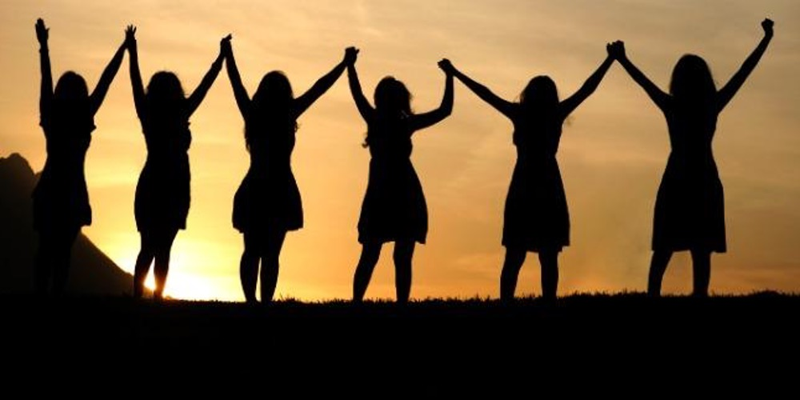
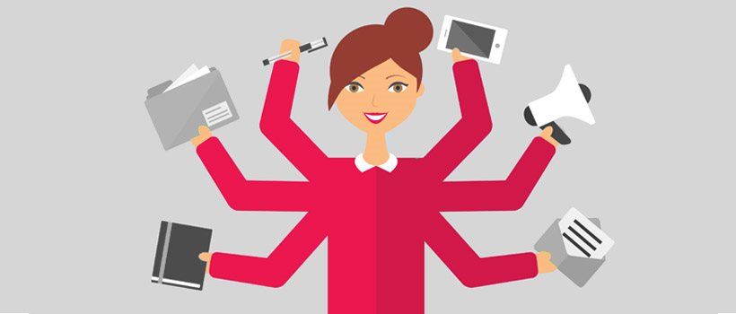
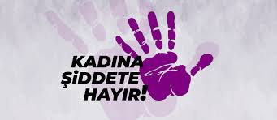

Kadın Hakları Nelerdir?
Dünyanın her yerinde kadınlar aynı haklara sahiptir. Bu haklar tıpkı insan hakları düşüncesinde olduğu gibi, kadınlara hiçbir ayrım gözetmeksizin tanınmış olan hakları kapsamaktadır. Eğitim hakkı, şiddetten uzak bir hayat yaşama hakkı, adil ve eşit ücret hakkı, mülkiyet sahibi olma hakkı, ifade özgürlüğü, seçme ve seçilme hakkı gibi haklar temel kadın haklarından bazılarıdır. Bu haklar, temelde insan haklarıdır ve insan haklarının ayrım gözetmeksizin herkesin doğuştan sahip olduğu haklardır. Kadınlara yönelik temel hakların tanınması ve korunması, insan haklarının uygulanması anlamının yanı sıra sosyoekonomik ve sosyokültürel alanlarda da gelişmeye dair sonuçları olabilecek çok yönlü bir etkiye sahiptir.
Ancak dünyanın pek çok ülkesinde kadın hakları çeşitli şekillerde ve derecelerde ihlal edilmektedir. Dünyada kadınların ayrımcılığa maruz kalmadıkları neredeyse hiçbir yer bulunmamaktadır. Eğitime erişimleri birçok yerde kısıtlanmaktadır, ekonomik haklar konusunda adil ve eşit ücretten yoksundurlar, sağlık hizmetlerine erişimde kısıtlı imkânlara sahiptirler, şiddet ve güvenlik riskleriyle daha fazla karşılaşmaktadırlar, taciz olaylarına daha çok maruz kalmaktadırlar. Çocuk gelinler, zorla çalıştırılma, cinsel sömürü, taciz, fiziksel şiddet, eğitimden mahrum bırakılma, iş hayatındaki ayrımcılık ve siyasi katılıma erişim gibi problemler, başlıca kadın hakları ihlallerindendir.
Kadınların hak ihlallerine maruz kalmalarının veya temel haklarından mahrum bırakılmalarının çeşitli sebepleri bulunmaktadır. Bu sebepler coğrafi, dinî, kültürel ve ekonomik koşullarla doğrudan bağlantılıdır. Dünya genelinde, örneğin Afganistan'da kadınların ve kız çocuklarının eğitimlerinin kısıtlanması, İran'da devam eden protestolar, çeşitli Avrupa ülkelerinde doğum izni ve eşit işe eşit ücret gibi taleplerle yürütülen kampanyalar, Güney Amerika'da kız çocuklarının cinsel sömürü amacıyla kaçırılması gibi insan haklarını ve kadın haklarını ihlal eden birçok mesele bulunmaktadır.
Küresel Durum
Küresel Cinsiyet Farkı Raporu'na göre 2022 yılı itibarıyla küresel çaptaki cinsiyet farkı %68,1'dir. 2022 yılında yürütülen ve 146 ülkeyi kapsayan araştırmanın sonucunda, çeşitli alanlarda erkek ve kadın arasındaki uygulama farkları tespit edilmiştir. Araştırmanın sonuçlarına göre sağlık alanındaki fark %95,8, eğitimdeki fark %94,4 ve siyasi yaptırım gücü alanındaki fark %22 olarak tespit edilmiştir. Kadınların eğitim, sağlık, iş gücüne katılım, siyasi temsil gibi konulardaki payı ülkelerin sosyoekonomik durumlarına göre değişiklik göstermektedir.
Kadın ve erkek eşitliği alanında yapılan araştırmalara göre henüz hiçbir ülke tam olarak cinsiyet eşitliği kapsamında belirlenen normları tam olarak uygulamıyor olsa da farkın en az olduğu ülke İzlanda (%90,8) olarak belirlenmiştir. İzlanda'yı sırasıyla Finlandiya (%86,2), Norveç (%84,5), Yeni Zelanda (%84,1), İsveç (%82,2), Ruanda (%81,1), Nikaragua (%81), Namibya (%80,7), İrlanda (%80,4) ve Almanya (%80,1) takip etmektedir.
Sağlık Hizmetlerine Erişimde Kadınlar
Sağlıklı olmak ve sağlık hizmetlerine erişim temel bir insan hakkıdır. Ayı zamanda bu temel hak bireylerin ve toplumların gelişimi için vazgeçilmez bir ön koşul olarak kabul edilmektedir. Kadınların da hem temel insan hakkı olarak temel sağlık hizmetlerine erişim hakkı hem de biyolojik ve fizyolojik sebeplerle gerekli sağlık hizmetlerinden faydalanma hakkı bulunmaktadır. Örneğin doğum öncesinde ve sonrasında, hamilelik sırasında ve üreme sağlığı gibi konularda her kadının gelişen tıbbi ve teknolojik gelişmelerin getirdiği imkânlarla sağlık hakkından yararlanma hakkı olsa da anne ölüm oranları küresel çapta hâlen oldukça yüksektir. Geçen 20 yıla kıyasla dünya genelinde %38'den fazla düşüş görülse de Sahra-altı Afrika başta olmak üzere hâlâ yüksek anne ölümlerinin görüldüğü bölgeler bulunmaktadır. Bu durum, annenin temel sağlık hizmetlerinden mahrumiyeti sebebiyle yaşanmaktadır. Şüphesiz ki, kadınların sağlık haklarından mahrum kalması, diğer haklardan mahrumiyet ile bağlantılıdır. Erken yaşta evlilik, eğitime erişimden mahrum kalma, fiziksel şiddet, aile içerisindeki karar mekanizmalarında etkin olamama gibi sebepler, kadınların sağlık haklarından yararlanabilme ve sağlık konusunda bilinçlenebilme konularının önündeki temel engellerdir.
Araştırmalar kadınların erkeklere oranla iki ila dört kat daha fazla intihar girişiminde bulunma eğiliminde olduklarını ortaya koymaktadır. Erkekler intihar girişimlerinde daha ölümcül yolları tercih etmeleri sebebiyle kadınlara kıyasla daha yüksek ölüm oranına sahip olsalar da intihar girişiminde bulunan kadınların sayısı erkeklerden daha fazladır.
Kadınların İş Gücündeki Payı
Dünya genelinde çalışma çağındaki kadınların %47'si iş gücü piyasasında yer alırken bu oran erkeklerde %74'tür. Bu rakam son çeyrek yüzyılda neredeyse hiç değişmemiştir. Ayrıca BM tarafından yayımlanan The World's Women 2020: Trends and Statistics başlıklı raporda, Covid-19 pandemisinin sebep olduğu ekonomik sıkıntıların etkilerinin hâlen devam ettiği ve bu kırılgan ekonomik ortamdan en çok etkilenen gruplardan birinin de kadınlar olduğu belirtilmektedir. Kadınların iş gücü piyasasına katılımının en düşük olduğu bölgeler Güney Asya, Kuzey Afrika ve Batı Asya'dır. Bu bölgelerdeki kadınların iş gücüne katılım oranlarının %30'un altında olduğu belirtilmektedir.Küresel ölçekte, ortalama olarak kadınlar çalışma hakkı bakımından erkeklerin yasal haklarının yalnızca dörtte üçüne sahiptir.
Kadınların Siyasi Temsil Düzeyi
19 Eylül 2022 tarihi itibarıyla BM üyesi 193 ülkenin 28'inde 30 kadının devlet/hükümet başkanı olarak görev yaptığı kaydedilmektedir.[11] Dünya çapında kadınların diğer önemli siyasi makamlardaki temsil oranlarına bakıldığında bakanların %21'inin,[12] parlamenterlerin %26'sının[13] ve yerel hükümetlerdeki meclislerin %34'ünün[14] kadın siyasilerden oluştuğu söylenebilmektedir. BM raporlarında mevcut hızda devam etmesi hâlinde dünya çapında parlamentolardaki eşit temsilin 2062 yılında sağlanabileceği belirtilmektedir.[15] Kadınların %50 ve daha fazla oranda bakanlıkta görev yaptığı ülkeler sırasıyla Nikaragua (%58,82), Avusturya (%57,14), Belçika (%57,14), İsveç (%57,14), Arnavutluk (%56,25), Ruanda (%54,84), Kosta Rika (%52.00), Kanada (%51,43), Andorra, Finlandiya, Fransa, Gine-Bissau ve İspanya'dır (%50,00).[16] Bu oranlar 2021 yılı baz alınarak tespit edilmiş oranlardır.
2022 yılında yayımlanan Global Gender Gap adlı raporda ise kadınların bakanlık pozisyonlarındaki temsil oranının 2006 yılında %9,9 iken 2022 yılında yaklaşık iki kat artarak %16,1'e yükseldiği belirtilmektedir. Kadınların bakanlık pozisyonlarında en fazla paya sahip olduğu ülkeler Nikaragua (%58,8), Belçika (%57,1) ve İsveç'tir (%57,1). Parlamentolardaki kadın oranı ise küresel çapta %14,9'dan %22,9'a yükselmiştir. Parlamentolarında en yüksek kadın oranına sahip ülkeler ise Ruanda (%61,3), Küba (%53,4), Nikaragua (%50,6) ve Meksika'dır (%50).Ocak 2022 itibarıyla ulusal parlamentolarında en çok kadın temsilci bulunan ülkeler.
Küresel Bir Sorun: Kadına Şiddet
Kadına yönelik şiddet insan hakları ihlallerinin aşırı şekillerinden biridir. Dünyanın her yerinde kadınlar, eğitim durumları, gelir durumları veya yaşları ne olursa olsun fiziksel, psikolojik, ekonomik ve cinsel şiddete maruz kalmaktadır. Dünya çapında, neredeyse her üç kadından birine denk gelen 736 milyon kadının hayatlarında en az bir kez fiziksel ve/veya cinsel şiddete maruz kaldığı belirtilmektedir. Yaşanan şiddet olaylarının %60'ının raporlanmadığı tahmin edilmektedir.[18] 15 yaş üzerindeki kadınların %30'u şiddete maruz kalmış/kalmaktadır. Bu rakamlara cinsel taciz eylemlerine dair rakamlar dâhil değildir. En yaygın şiddet ise kadının eşinden ya da aile bireylerinden gördüğü şiddettir. Kadınlara yönelik şiddet eylemlerinin çoğu mevcut ya da eski eşleri veya birlikte oldukları partnerleri tarafından gerçekleştirilmektedir. 15 yaş üzerindeki 640 milyondan fazla kadının bu türden bir yakın eş/partner şiddetine maruz kaldığı bilinmektedir. 15-19 yaş aralığındaki kız çocuklarından bir ilişki içerisinde olanların %24'ü fiziksel ve/veya cinsel şiddete maruz kalmıştır. 15-24 yaş aralığındaki kadınların %16'sı ise bu türden bir şiddete son 12 ay içerisinde maruz kaldıklarını bildirmişlerdir.
Kadına yönelik şiddet eylemleri çeşitli formlarda görülebileceği gibi kamusal alanlar, evler ve hatta online platformlar gibi çeşitli alanlarda da ortaya çıkabilmektedir. Gelişen teknolojiyle birlikte artan farkındalığa ve ekonomik alandaki gelişmelere rağmen kadına yönelik şiddet eylemlerinin önüne geçilememektedir. Her yıl yüz binlerce kadının hayatını kaybetmesine veya sakat kalmasına neden olan şiddet olaylarına karşı caydırıcılığı yüksek hukuki ve idari düzenlemelerin geliştirilmesi oldukça önemlidir. Aksi takdirde, kadına yönelik şiddet giderek artan bir küresel sorun olarak nesilleri fiziksel, psikolojik ve ekonomik olarak etkilemeye devam edecektir.
 Şiddet türleri anketini doldurarak kendinizi test edebilirsiniz
Şiddet türleri anketini doldurarak kendinizi test edebilirsiniz
Türkiye'de Kadın Hakları ve Güncel Meseleler
Türkiye, 1985 yılında Kadına Karşı Her Türlü Ayrımcılığın Önlenmesi Sözleşmesi'ne (CEDAW) taraf olmuş ve 2002 yılında CEDAW İhtiyari Protokolünü onaylamıştır. Ayrıca İstanbul Sözleşmesi olarak da bilinen Kadınlara Yönelik Şiddet ve Aile İçi Şiddetin Önlenmesi ve Bunlarla Mücadeleye İlişkin Avrupa Konseyi Sözleşmesi'ni imzalayan (2011) ve onaylayan (2012) ilk ülke olmuştur. Türkiye, 20 Mart 2021 tarihinde İstanbul Sözleşmesi'nden çekildiğini açıklamıştır.[24] Türkiye'de etkili denilebilecek bir seviyede kadın hareketleri ve aktivisti bulunmaktadır. Bu hareketler ve aktivistler ülke çapında çeşitli kampanyalar düzenlemektedir. Örneğin İstanbul Sözleşmesi'nden çekilmenin ardından birçok kadın hakları savunucusu bu çekilmeyi protesto etmiştir.
Sonuç
Dünyanın çeşitli bölgelerindeki kadınlar, bulundukları bölgenin mevcut siyasi, ekonomik, kültürel ve coğrafi durumuna bağlı olarak farklı şekillerde hak ihlallerine maruz kalmaktadır. Söz konusu hak ihlalleri coğrafyaya göre farklılık gösterse de temelde tüm dünyada kadınlar ciddi hak ihlallerine uğramaktadır. Bu sorunun çözümü için atılması gereken adımlar şu şekilde sıralanabilir:
- Kadın haklarının korunmasına yönelik oluşturulan uluslararası sözleşmelerin yaygınlaştırılması, sözleşmeleri kabul eden ülkelerdeki uygulamalarının kontrol edilmesi ve sözleşmeyi ihlal eden ülkelere yönelik yaptırımların hayata geçirilmesi gerekmektedir.
- Kadınların ve kız çocuklarının eğitimi desteklenmelidir. Bu mesele, küçük yaşta evliliklerin, zorla evliliklerin ve şiddetin önlenmesi ve sosyoekonomik refahın güçlenmesi gibi konular için oldukça önemlidir.
- Kadınların ekonomik olarak güçlendirilmesine yönelik faaliyetlerin arttırılması gerekmektedir.
- Kadınların kendi problemlerini daha iyi ifade edebilmeleri adına siyasi temsil oranları arttırılmalıdır.
- Kadınlara ve kız çocuklarına yönelik şiddeti sona erdirmek için şiddetin daha fazla görüldüğü bölgeler başta olmak üzere, bu yöndeki uluslararası yardımların arttırılması gerekmektedir.
- Temel kadın haklarının korunmasında toplumsal bir bütünlük oluşturulması adına erkeklerin de hak ihlalleri ve kısıtlamalara karşı başlatılan kampanyalara katılımları gerekmektedir.
Kadın haklarının korunması ve hak ihlallerinin önlenebilmesi için gereken tüm adımların hızla atılması, küresel çaptaki kadın haklarının geliştirilmesinde ve hak ihlallerinin önlenmesinde hayati öneme sahiptir.
Kadın hakları, insan haklarının ayrılmaz bir parçasıdır. Kadınların güçlenmesi, toplumun güçlenmesi demektir. .